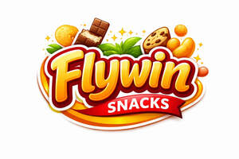

Trade Mark Journal No.2026/001 2 January 2026
UK00004311157 16 December 2025 (29,30,32,35)

- Class 29
- Fruit snacks; Milk-based snacks; Tofu-based snacks; Coconut-based snacks; Potato snacks; Dried fruit-based snacks; Fruit-based snack food; Snack food (Fruit-based -); Candied fruit snacks; Nut-based snack foods; Cheese-based snack foods; Snacks of edible seaweed; Potato-based snack foods; Vegetable-based snack food; Tofu-based snack food; Vegetable-based snack foods; Soy-based snack foods; Potato snack foods; Sweet corn-based snack foods; Meat-based snack foods; Fruit based snack foods; Potato crisps in the form of snack foods; Fruit- and nut-based snack bars; Yoghurt beverages; Yogurt drinks; Milk beverages; Yogurt-based beverages; Creamers for beverages; Yoghurt drinks; Milk beverages containing fruits; Milk drinks; Milk drinks containing fruits; Beverages made with yogurt; Beverages made from yogurt.
- Class 30
- Cereal snacks; Rice snacks; Crispbread snacks; Tortilla snacks; Cereal-based savoury snacks; Corn-based savoury snacks; Fruit cake snacks; Snacks made from muesli; Snacks manufactured from muesli; Cereal based snacks; Snacks manufactured from cereals; Rice cake snacks; Snack food (Cereal-based -); Snack foods made from cereals; Cheese balls [snacks]; Corn-based snack foods; Rice-based snack foods; Cheese curls [snacks]; Rice-based snack food; Snack food (Rice-based -); Snack food products made from cereals; Grain-based snack foods; Wheat-based snack foods; Cereal snack foods flavoured with cheese; Extruded corn snacks; Cereal-based snack bars; Extruded wheat snacks; Multigrain-based snack foods; Snack foods prepared from maize; Tea beverages; Puffed corn snacks; Snack food products made from cereal starch; Snack products made of cereals; Snack food products made from rice; Coffee beverages; Chocolate beverages; Flavourings of tea for food or beverages; Flour based savory snacks; Snack foods made from corn; Snack food products made from cereal flour; Snack foods made from wheat; Snack foods made of wheat; Prepared coffee beverages; Snack food products consisting of cereal products; Tea beverages (Non-medicated -); Cheese flavored puffed corn snacks; Tea beverages with milk; Coffee drinks; Coffee beverages with milk; Snack food products made from rusk flour; Chocolate-based beverages; Beverages (Chocolate-based -); Snack foods prepared from potato flour; Drinks prepared from chocolate; Chocolate-based beverages with milk; Beverages made of tea; Sweets; Snack food products made from rice flour; Flavourings of almond for food or beverages; Chocolate beverages with milk; Tea-based beverages; Beverages (Tea-based -); Beverages made from coffee; Beverages made of coffee; Flavourings of lemons for food or beverages; Snack food products made from potato flour; Beverages containing chocolate; Muesli desserts; Puffed cheese balls [corn snacks]; Beverages made with chocolate; Beverages made from chocolate; Extruded snacks containing maize.
- Class 32
- Fruit beverages; Smoothies [non-alcoholic fruit beverages]; Fruit drinks; Iced fruit beverages; Fruit beverages (non-alcoholic); Non-alcoholic fruit drinks; Fruit flavored drinks; Fruit juice beverages; Fruit juice for use as beverages; Fruit juice beverages (Non-alcoholic -); Non-alcoholic fruit juice beverages; Fruit-flavored beverages; Fruit-based beverages; Non-alcoholic beverages containing fruit juices; Non-alcoholic beverages flavored with coffee; Frozen fruit beverages; Non-alcoholic beverages flavored with tea; Non-alcoholic dried fruit beverages; Frozen fruit drinks; Non-alcoholic beverages flavoured with coffee; Fruit juice drinks; Juice drinks; Non-alcoholic soda beverages flavoured with tea; Vegetable-based beverages; Non-alcoholic beverages flavoured with tea; Fruit flavoured drinks; Non-alcoholic beverages with tea flavor; Non-alcoholic beverages; Beverages (Non-alcoholic -); Vegetable drinks.
- Class 35
- Wholesale services in relation to non-alcoholic beverages.
MNN GENERAL TRADING LLC